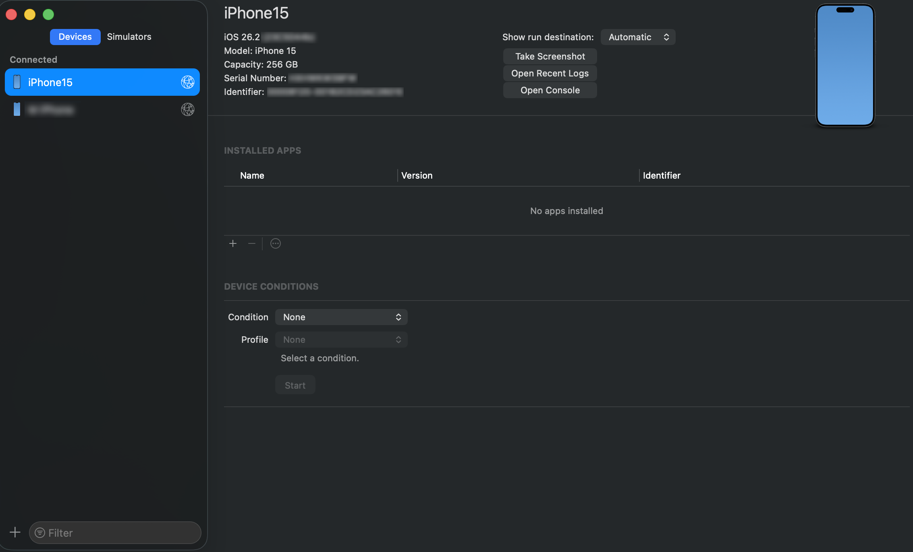

iOS crash & error logs
Collect crash reports and device logs from an iPhone or iPad so developers can find the cause of a crash, freeze or error.
Before you start
- A Mac with Xcode installed.
- A USB cable for the iPhone or iPad.
- Write down the time the crash happened. Crash reports are listed by app name and time.
View crash reports in Xcode
Use this when the crash already happened on the device.
- Connect the device with USB, unlock it and tap Trust if asked.
- In Xcode, open Window › Devices and Simulators.
- On the Devices tab, select your device under Connected.
- Click Open Recent Logs. Crash reports are listed with the app name and timestamp.
- Find the report that matches the time of the crash and export it, or drag it to Finder. Attach the file to the bug report as it is.

Capture live logs while you reproduce
Use this when you can make the problem happen again.
- In the same window, click Open Console. The Console app opens on your Mac.
- Select the device in the sidebar and click Start to begin streaming.
- Type the app name in the search field to hide messages from other apps.
- Reproduce the issue, then click Pause.
-
Select the messages (
⌘A), copy them and save them in a.txtfile.
Without a Mac
Testers can share crash reports straight from the device.
- Open Settings › Privacy & Security › Analytics & Improvements › Analytics Data.
- Find the entry that starts with the app name and the date of the crash.
- Open it and tap the share button to send the file.
What to include in the report
- App version and build number.
- Device model and iOS version.
- Date and time of the crash, and the steps to reproduce it.
- A zip file with all the logs from the session, not only the lines that show the crash.
Keep the original fileSend the crash report file itself (
.ips) instead
of copied text. Developers need the full file to match the crash to the code.